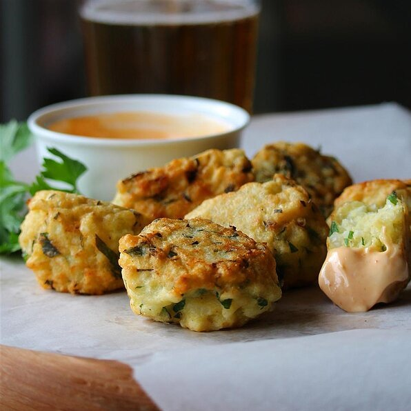

Return to homepage
Fried Rice Cakes

Description
White cooked rice is combined with fresh chopped parsley and Parmesan cheese and
deep-fried to perfection. Great as a side dish. An original from Brazil. Serve hot.
Ingredients
- 2 cups cooked white rice
- ¾ cup all-purpose flour
- 2 eggs
- ½ cup chopped fresh parsley
- ¼ cup grated Parmesan cheese
- salt and ground black pepper to taste
- oil for frying
Steps
-
Mix white rice, flour, eggs, parsley, Parmesan cheese, salt, and black pepper
together with a wooden spoon in a bowl. Shape spoonfuls of the mixture into balls.
-
Heat oil in a large saucepan or deep-fryer over medium heat until hot. Fry balls a
few at a time until browned, about 2 minutes per side. Transfer to a plate lined
with paper towels.
Return to homepage